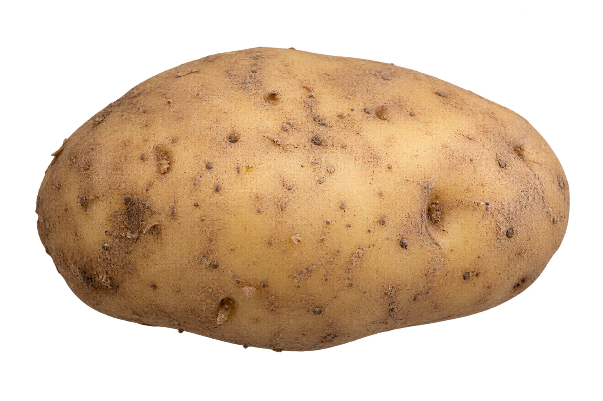

<!doctype html><html lang="pt-BR"><meta charset="utf-8"><link rel="stylesheet" href="style.css"><title>Estudo C · Frame 1</title><main class="frame c1"><div class="paper"></div><p class="lead">Li</p><h1 class="headline sans">"Água<br>em Marte"</h1><p class="connector">e pensei:</p><p class="punch serif">batatas!</p><svg class="gesture" viewBox="0 0 800 500" preserveAspectRatio="none" aria-hidden="true"><path d="M24 48 C210 19 472 78 740 35"/></svg></main></html>